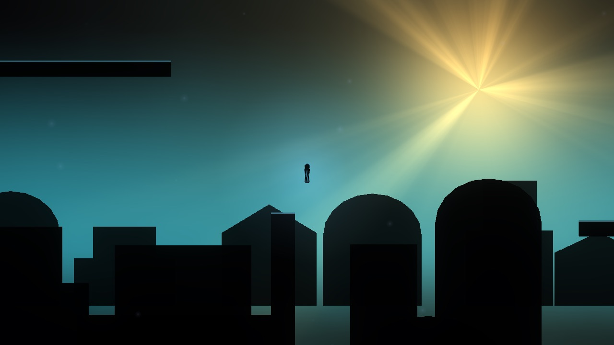
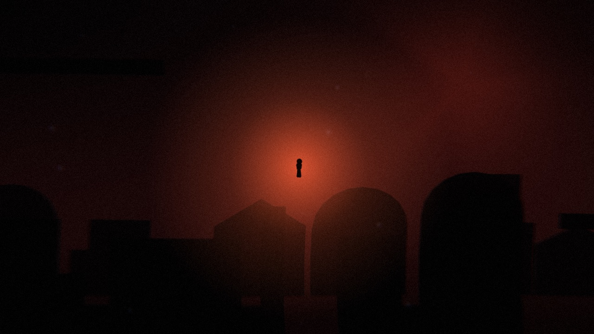
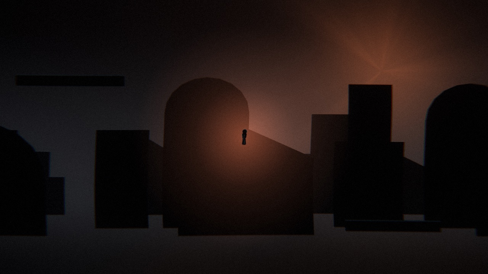
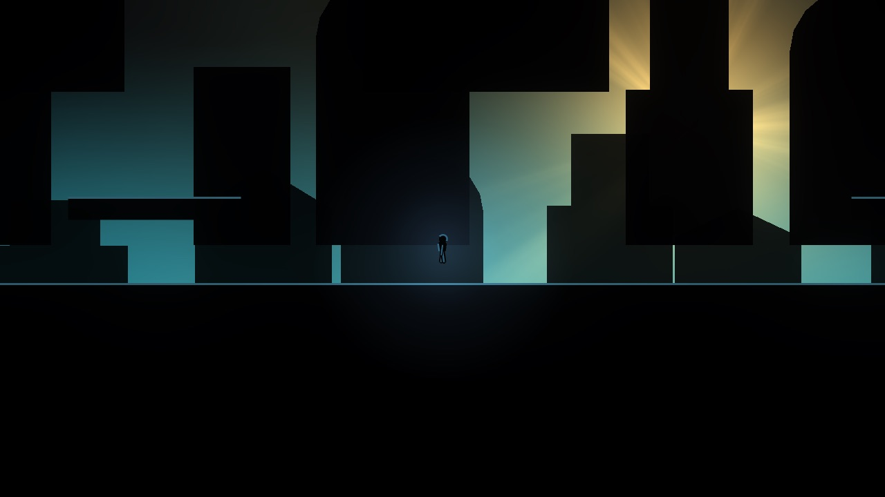

28 / project
Dream
An ambient platformer
You are dreaming. You win when you realise it. A 2D silhouette-and-light ambient platformer, built solo in Godot 4.5.




The browser build
A browser build (TypeScript and raw WebGL2, no engine, about 16 KB of gzipped script) is where new work happens, a line-by-line port of the Godot original. The dream runs on through four rooms: prologue, threshold, drift, confluence.
The world is still grey-box geometry underneath; the screenshots here show the look wrapped around it.
Engine
TypeScript and WebGL2 in the browser
Godot 4.5 as the reference
2D silhouette and light
Solo build
TypeScript and WebGL2 in the browser
Godot 4.5 as the reference
2D silhouette and light
Solo build
Repository: private
All work